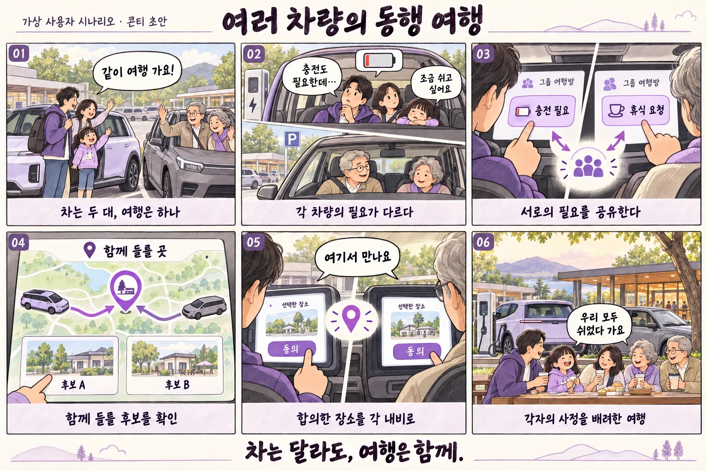

차는 달라도, 여행은 함께.
차마다 다른 휴식과 충전 필요를 모아 다음 만남을 정합니다.
차는 달라도, 여행은 함께서버 실증 선행사람의 하루에서 출발합니다.
두 대 이상으로 여행하는 가족·친구
차마다 다른 휴식과 충전 필요를 모아 다음 만남을 정합니다.
문제의 빈도와 강도는 사용자 인터뷰로 확인할 가설입니다.
여섯 장면으로 보는 경험.

- 두 대의 차로 가족 여행을 출발한다.
- 차마다 휴식과 충전 필요가 달라진다.
- 동의한 상태와 요청을 그룹에 공유한다.
- 같이 만날 후보 장소를 살펴본다.
- 두 차량의 사용자가 장소에 동의한다.
- 다시 만나 함께 쉬며 여행을 이어간다.
기능을 넘어, 어떤 마음이 남을까.
말하기 어려운 작은 필요
우리 차는 쉬고 싶은데, 다른 차에 또 연락하기 망설여진다.
함께 배려받는 소속감
서로의 필요를 알고 함께 결정합니다. 같은 속도보다 같은 마음으로 여행합니다.
관계를 위한 연결입니다. 다른 차의 필요를 존중하고 위치 공유와 만남에 대한 선택권을 남깁니다.
네 번의 연결, 하나의 흐름.
상시 연결을 가정하지 않습니다. 연결이 끊기면 마지막 합의와 갱신 시각을 보여주고 새로운 합의를 확정하지 않습니다.
차량 화면에서는, 짧고 분명하게.
우리 여행 그룹
다음 만남 후보
함께 결정한 목적지
비작동 화면 콘셉트입니다. 실제 구현은 CarUxRestrictions와 입력 제한을 따릅니다. 단순히 속도 0 또는 P단만으로 조작 가능 여부를 판단하지 않습니다.
SDK와 우리가 만들 기능을 나눕니다.
| SDK | 맡길 역할 | 검증·자체 개발 경계 |
|---|---|---|
| Vehicle · EV | 동의한 배터리 상태 공유 | 공유 범위와 보존 기간 최소화 |
| Fused Location | 동의한 위치 공유 | 갱신 시각과 오래된 상태 표시 |
| Navi | 합의한 장소를 각 차의 목적지로 | 자동 추종·군집 주행 아님 |
| TTS / STT | 합의 결과 안내 / 요청 입력 | 그룹 합의·메시징은 자체 서버 |
차량 상태 · 위치
내비 · 음성
사용자 확인 · 상태 관리
규칙 · 화면 · 로컬 저장
자체 HTTPS 서버
그룹 공유·합의
Gleo·UWB·VisionPulse는 MVP에서 제외합니다. 외부 인터넷은 공식 문서의 네트워크·외부 서버 전제를 근거로 검토하되, 실제 HTTPS 연결과 끊김 복구는 팀이 검증해야 합니다. 위치는 오래되거나 없을 수 있고, 차량 값은 capability 확인이 필요합니다.
가치가 반복되어야, 사업이 됩니다.
누가 비용을 낼까?
여행 그룹 이용권·렌터카 제휴 가설. 일회성 여행 수요이므로 월 구독보다 반복 사용과 제휴 가능성을 먼저 확인합니다.
함께하는 관계
관계를 위한 연결입니다. 다른 차의 필요를 존중하고 위치 공유와 만남에 대한 선택권을 남깁니다.
현대자동차 브랜드 비전에 대한 팀의 해석입니다.
| 공식 1차 평가 항목 | 제안에서 보여줄 것 | 보완할 증거 |
|---|---|---|
| 차량특화성 | 차마다 다른 휴식과 충전 필요를 모아 다음 만남을 정합니다. | 휴대폰만 사용할 때와 경험 비교 |
| 창의성 | 서로 다른 차량의 필요를 합의로 연결 | 기존 서비스 대비 차별성 조사 |
| 기술 활용성 | 필요한 SDK를 하나의 완결된 흐름으로 연결 | 권한·값 변화·오류·재접속 시연 |
| 사업성 | 여행 그룹 이용권·렌터카 제휴 가설. 일회성 여행 수요이므로 월 구독보다 반복 사용과 제휴 가능성을 먼저 확인합니다. | 두 앱 인스턴스와 외부 서버 통신 검증 |
공식 세부 배점은 공개되지 않은 것으로 검토했습니다. 임의 점수·예상 수상 확률을 부여하지 않습니다. 구독이나 브랜드 문구 자체가 가산점이라는 근거는 없습니다.
3명이 먼저 증명할 작은 완성.
첫 번째 검증 관문
두 앱 인스턴스와 외부 서버 통신 검증
차량·위치·내비 연동
그룹 서버·합의 상태
공유 UI·가족 인터뷰
완료 기준: 정상 흐름 1회뿐 아니라 값 없음·권한 거절·연결 끊김에서도 잘못된 완료나 합의를 만들지 않을 것. 음성 접근이 막히면 정차 중 선택·입력으로 핵심 흐름을 검증합니다.
공식 근거와 검증 범위
- 공모전 심사·시상 안내 — 평가 항목과 공지 확인
- Pleos Playground · 프로젝트·SDK 신청 안내
- Vehicle SDK · NaviHelper SDK
- 플랫폼·네트워크 정책 · 앱 제출 가이드
- 현대자동차 브랜드 비전 — Progress for Humanity
공개 문서상 기능은 사용 권한·차종 지원·에뮬레이터 실행을 보장하지 않습니다. 평가표는 팀의 판단이며 공식 점수가 아닙니다.